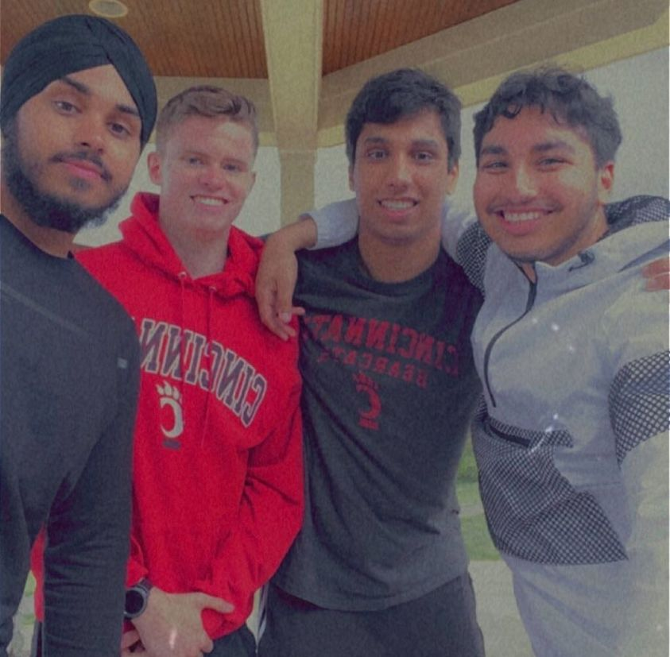
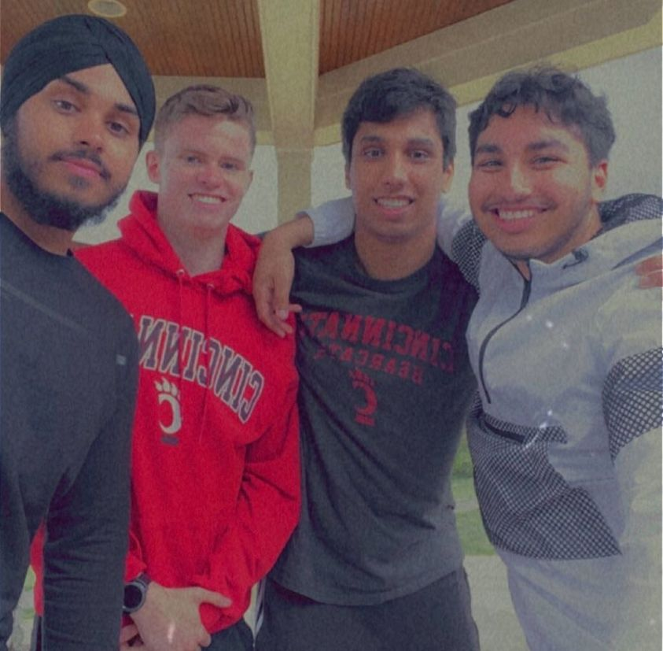

ABOUT ME
Hello! My name is PRABHJOT SINGH but I go by PRABH. You might be wondering, how do I say that? Well it's easy! Just cut problem in half. Prob! Anyway now for the more important stuff. I am currently a THIRD YEAR studying COMPUTER SCIENCE at the UNIVERSITY OF CINCINNATI (UC). I live in WEST CHESTER TOWNSHIP, OHIO with my amazing aunt and uncle. Currently, for my current co-op I work at LONDON COMPUTER SYSTEMS (LCS) as a developer where I just recently gained hands on experience with real world code and it is still blowing my mind.
Along with working at LCS, I also work at OKEANA FOOD MART as a CASHIER, this is a job I have held since the beginning of high school and have truley come to enjoy. While working at the register, I have had the opprotunity to handle inventory, price databases, and backend paperwork.
During my semester at UC I work as TEACHING ASISTANT (TA). Working with many incoming freshman has not only deepened my understaing of core engineering ideas but also allowed me to asist students. I really enjoy the TA led sessions and simply helping students when they require it (most rewarding feeling ever). Oh and I guess all the grading can be fun too...
When I am not in class or working I enjoy running, biking, driving (with a good playlist), and hanging with friends (pictured below). My favorite food is pasta and I drink milk as a refreshment sometimes (which is perfectly normal).
 

Low quality pictures with with my high quality family :)